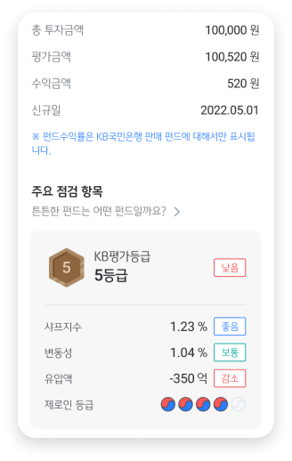
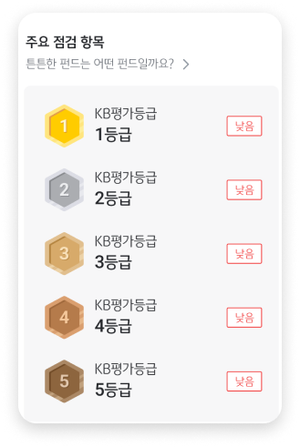

비대면채널 고도화 2022FinanceApp
Overview
WM자산관리는 금융자산에 대한 심도 있는 분석과 진단이 가능한 플랫폼입니다. 대면 자산관리 콘텐츠를 스타뱅킹과 원활하게 연계할 수 있도록 개편하
였습니다. 또한, 마이데이터 기반으로 투자스타일(WMTI), 투자경험, 투자행태, 투자선호도를
반영하여 차별화된 자산관리 서비스를 제공합니다.


Project Approach
인간적으로 감정과 공감 능력으로 친근하게 전달하는 사용자 경험이 필요합니다.
브랜드의 충성도를 높이려면 더 많은 공감을 나타내는 것이 중요합니다. 인공 지능, 빅 데이터, 기계 학습 및 자동화와 같은 미래 기술은 고객 경험을 완전히 새로운 차원으로 끌어올릴 수 있습니다. 로봇이 사람과 다른 점은 서로에 대한 감정과 공감 능력입니다. AI를 활용한 자동화 추천, 수 많은 수학적인 답을 제시하는 서비스임에도 불구하고 서비스를 전달하는 순간에는 인간적으로, 친근하게 전달하는 것이 사용자 경험 설계의 핵심이 되어야 합니다.

합리적Rational
제품중심Focus on product
수익률 우선Metrics KPI, ROI
시스템Systems

공간Emotional
사용자 중심Focus on customer
가치 우선Value
관계 소통Relationships, feedback
투자 제안
자산관리를 통해 실효적인 이득을
얻을 수 있는 투자 제안 사용자에게
고르는 재미와 쉬운 진입의 경험을 전달
용어는 최대한 쉽게, 전문 용어는
부연 설명을 통해 사용자가 당황하
지 않는 라이팅으로 가볍고 캐주얼
한 톤앤 무드 전달
수치 정보에 피로감을 느끼지 않도록
비주얼라이징 그래프, 인포그래픽 사
용과 상세 정보는 사용자의 선택에 따
라 확인 할 수 있도록 첫 전입 시 정보
브리핑을 중점적으로 구성
Outcome
나의 WMTI 투자 스타일
일상에서 친숙한 MBTI와 유사한 WMTI(Wealth Management Type Indicator)를
통해 개인별 투자성향 정보를 안내하여 흥미로운 자산관리 서비스로 인식을 유도합니다.


케이봇쌤 포트폴리오
맞춤형, 테마형, 목표달성, 로보쌤 등 4가지 펀드포트폴리오 상품의 UX개선을 통해
직관적인 이해와 손쉬운 가입 절차를 제공합니다.


목표달성 포트폴리오
다양한 세대가 공감할 수 있는 투자 목표와 목표 별 상품가입 동기를 불러 일으키는
목표 이미지의 감성적 표현에 중점을 둡니다.


자산 분석 및 진단
자산의 현황과 진단 결론을 요약 형식으로 먼저 제시하여,
이후 정보 니즈에 따라 단계별 상세 진단화면으로 진입하도록 유도합니다.

투자 건강 검진
복잡하고 어려울 수 있는 펀드 상품을 ‘건강 진단'의 컨셉 기반으로 직관적
으로 결과를 전달하고 단계적인 분석 정보제공 형태로 구성하였습니다.



Project Retrospective
유플리트는 프로젝트가 종료되면 회고하는 시간을 가집니다. 함께 들어볼까요?
어떤 마음가짐으로 프로젝트를 접근하셨나요?
프로젝트에 투입되면서 금융분야의 핵심 뱅킹 서비스는 아니지만 투자자산관리라는 특수한 금융 서비스 분야를 다루게되어 흥미와 관심을 갖게 되었습니다. 그 동안 수행해왔던 커머스, 기업 서비스 구축과 달리 은행 고유의 방법론과 개발프로세스가 잘 갖춰져 있고 모든 파트에서 그 과정과 절차를 충실히 준수하는 것이 인상적이였습니다. 그 만큼 유플리트 TF는 UX분야에 집중할 수 있어서 좋았고, 특히 프로젝트 성공관점에서 UX 설계와 검증 단계에 주도적 책임의식을 갖고 진행될 수 있도록 유도하였습니다.
아쉽게 하지 못했던 것이 있다면? 같은 상황이 된다면 어떻게 해결하는게 좋을까요?
UI 관점에서만 기획을 한다면 부담감은 줄어들겠지만, 가장 어려웠던 것은 개발자와의 커뮤니케이션이였습니다. 왜 개발된 차트상에서 데이터가 노출되지 않나요? 와 같이 물어보면 '스테이징에서는 값이 노출되지 않습니다'를 단순히 '값이 없어서요'로 전달받거나 새롭게 진행하고 싶은 기획이 있어도 개발 가능 범위의 파악이 부족해 급박한 일정에 다시 반복 수정을 해야했던 점은 시간 부족을 야기하게 되어 아쉬움으로 남습니다. 다음 프로젝트에서는 개발 가능여부를 조금 더 빨리 파악해 시간을 효율적으로 사용해야겠다는 생각이 들었습니다.